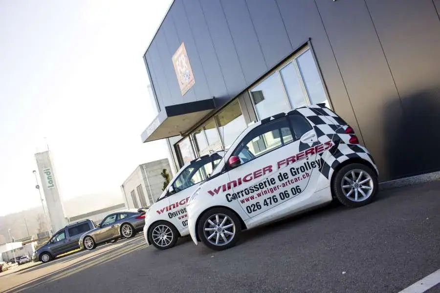
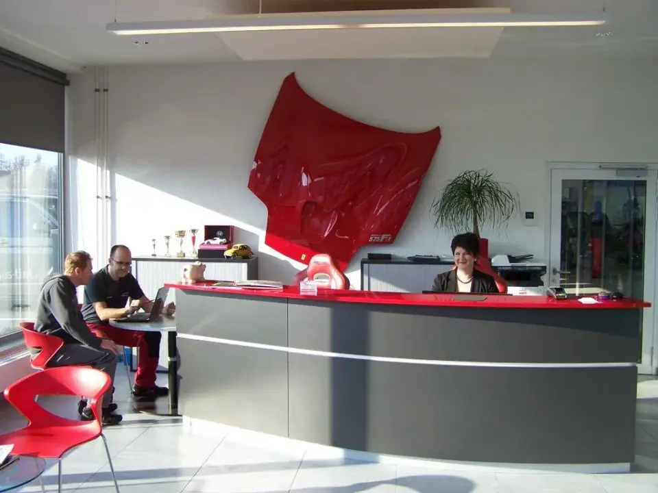

Carrosserie & services · 07 prestations
Carrosserie
toutes
marques.


Réparation toutes marques
Personnel constamment formé aux exigences de toutes les marques. Accompagnement dans l'annonce et la gestion des sinistres.
Assurances partenaires : Alphera · Allianz · Zurich · AXA · Helvetia · Smile · Mobilière (pare-brise) · Fenaco

Tous travaux de carrosserie
Tôlerie, redressage, remplacement d'éléments, avec un outillage de dernière génération.
Débosselage
Remise en forme des éléments de carrosserie déformés.

Peinture & finition
Peinture au four, finitions mates et peinture de véhicules anciens, travaillées dans les règles de l’art.
- Four
- Peinture au four
- Mat
- Une finition qui demande une attention particulière pour rester durable
- Ancienne
- Restauration de la peinture des véhicules de collection
- Produits
- Produits écologiques
Vitrages
Réparation et remplacement de pare-brise, lunettes arrière et vitres latérales. Teintage de vitres.

Véhicules de remplacement
Des voitures de remplacement récentes pendant la durée des travaux.

Prestations complémentaires
Remplissage de climatisation et conseils personnalisés. Prise en charge du véhicule sur le lieu de votre choix, accompagnement à domicile ou au travail et devis : gratuits.
Déroulement
Du sinistre
à la restitution.
- T01
Contact & devis
Un appel, un e-mail ou une visite. Le devis est gratuit.
- T02
Prise en charge
Votre véhicule est pris en charge sur le lieu de votre choix ; accompagnement à domicile ou au travail.
- T03
Sinistre
Nous vous soutenons dans l'annonce et la gestion du sinistre avec votre assurance.
- T04
Mobilité
Une voiture de remplacement récente pendant les travaux.
- T05
Réparation
Carrosserie, peinture, vitrage : le travail est réalisé à l’atelier de Grolley.